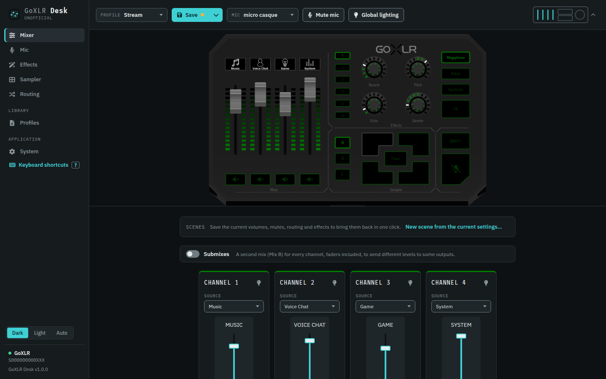

GoXLR Desk
Configure and control your GoXLR or GoXLR Mini from Windows, Linux or macOS.
Free, open source (MIT) and unofficial.
A fork of GoXLR Utility. GoXLR Desk is derived from GoXLR Utility, made by the GoXLR on Linux team, and keeps its MIT licence. It is a separate project with a redesigned interface, sample management, scenes, backups and many fixes. Please report GoXLR Desk issues on its own repository, not to GoXLR Utility.

Everything the GoXLR does, on your computer
Full control of the GoXLR and GoXLR Mini, compatible with the profiles of the official app.
Mixer and routing
Volumes, mutes, faders, submixes and the full input and output routing matrix.
Microphone and effects
Gate, compressor, equaliser, de-esser, and the reverb, echo, pitch, gender, megaphone, robot and hard tune effects.
Sampler and sample library
Browse, preview, trim, move and restore samples, drop them on the buttons, and record from before you press.
Profiles, scenes and undo
Load and save profiles, switch scenes in one click, undo a change, and back up your settings.
From any device
Open the interface from a phone or another computer on your network, with an access link.
Scripts and automation
An HTTP and WebSocket API and a command line client, for Stream Deck, OBS and your own scripts.
Install
Get the file for your system from the latest release.
Windows
- The
.exeinstaller, for x64 or ARM. - Needs TC-Helicon's GoXLR driver, installed with the official app.
- The installer isn't signed yet: Windows may ask for confirmation (More info, Run anyway).
Linux
.debfor Debian 12+, Ubuntu 22.04+ and their derivatives..rpmfor Fedora and openSUSE.- The interface opens in your web browser.
Coming from GoXLR Utility
- GoXLR Desk installs next to it, with its own settings.
- On its first start, it copies your profiles, samples and settings, once.
- Only one of the two can control the GoXLR at a time.
Integrations
Tools made for GoXLR Utility use the same API and work with GoXLR Desk.